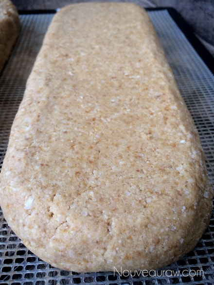
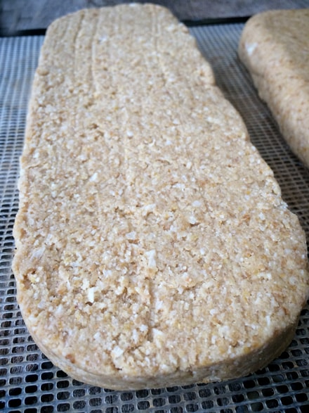
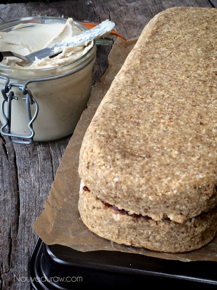
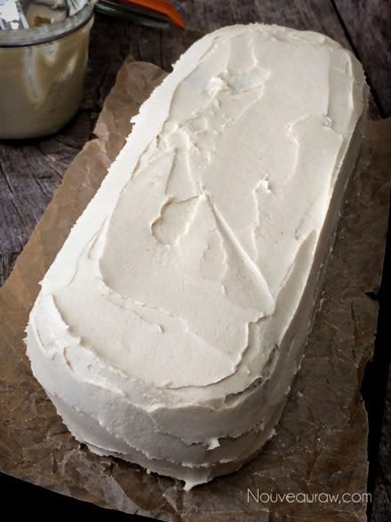
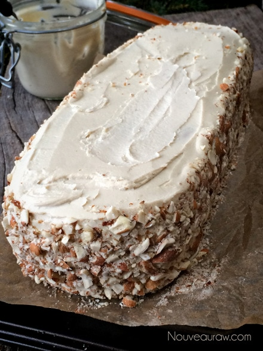
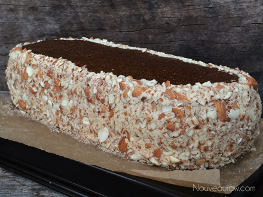
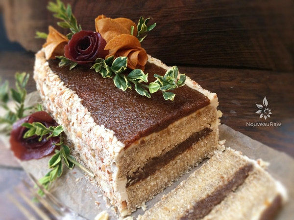

Apricot Nut Spice Cake with Spiced Apricot Compote
They say that we eat with our eyes first and after this culinary work of art, I was plum stuffed. :) But seriously, how the food looks is one of the first sensory criteria that we use to make decisions about the foods we eat. Eating, in general, is a multi-sensory experience.
Our eyes take charge of the whole process from the get-go. More often than not, we listen to our eyes rather than our logic when it comes to making food choices. Logic tells us we ought to eat something healthier or to put the fork down after so many bites, but the eyes, oooh those darn eyes, they send signals to our mouth which host a colony of favor receptors, which are primed to transmit information to the brain. The mouth begins to water; the eyes glaze over, the emotional feeling of self-gratification takes hold… And if we are not careful, more times than often, we can lose that control.
Logic tells us we ought to eat something healthier or to put the fork down after so many bites, but the eyes, oooh those darn eyes, they send signals to our mouth which host a colony of favor receptors, which are primed to transmit information to the brain. The mouth begins to water; the eyes glaze over, the emotional feeling of self-gratification takes hold… And if we are not careful, more times than often, we can lose that control.
The mouth begins to water; the eyes glaze over, the emotional feeling of self-gratification takes hold… And if we are not careful, more times than often, we can lose that control.
We can combat this though. Keep the fridge and pantry stocked with whole foods, healthy foods… surround yourself with nutrient-dense, delicious and beautiful foods so the temptation of the not-so-desirables, can’t creep in.
My hope with this cake was to lasso in the ole’ taste buds by creating a visually delightful dessert. I wanted to win over the “eyes” of our guests and loved ones. I wanted them to approach this cake and think, “Oh my gosh, this is a beautiful cake!” (eyes start sending those signals) I wanted them to enjoy a slice of the cake and think, “OMGosh, this tastes amazing!” (the mouth becomes a firework display of signals to the brain) and I wanted them to say, “You’re kidding me! This is good for me?!” I wanted the belly to be thanking them profusely for sending down such amazing nutrients.
You spend a lot of time learning about whole foods and their health benefits. You shop for the perfect ingredients. You spend valuable time prepping for your creation. You read and reread the instructions to the recipe 3x over to make sure you follow it to a “T”…. you are almost there…. don’t drop the ball now! Let your creative side take control and create your own work of art. Remember though; there is beauty in simplicity too! Let your love for those that you will be sharing this with, sense your love for them, through the love and beauty that you put into your creations.
yields 1 springform pan
Cake:
- 4 cups raw coconut flour, fresh ground (took 6 cups shredded coconut)
- 1 1/4 cups raw almond flour
- 1 1/4 cups raw sprouted buckwheat flour
- 1 cup ground flaxseeds
- 1 tsp ground cinnamon
- 1/4 tsp cardamom
- 1/2 tsp sea salt
- 2/3 cup maple syrup or raw coconut nectar
- 1 cup water, soak water
- 2 cups young coconut meat
- 1 cup dried apricots, rehydrated
- 2 tsp vanilla extract
Apricot compote:
- 2 cups dried apricots
- 1/4 cup soak water
- 1 Tbsp raw coconut nectar
- 2 tsp lemon juice
- 1 tsp vanilla extract
- 1/4 tsp sea salt
- 1/4 tsp Allspice
Frosting:
Decorations:
Preparation:
Cake:
- Rehydrate the dried apricots in warm water, enough to cover them.
- Allow them to soak while you work on putting the next part of the recipe together.
- In a large mixing bowl combine the coconut/almond and buckwheat flour, ground flaxseed, cinnamon, cardamom, and sea salt. Mix well.
- I used my hands to work out any lumps that may have been in the flours.
- Drain the water from the apricots, keep one cup of the soak water, and set aside.
- In the blender combine the add the maple syrup, soak water, coconut meat, apricots, and vanilla. Blend until smooth in texture.
- Add the wet ingredients to the dry ingredients and mix with your hands, working out any lumps, and making sure everything is well incorporated.
- If the batter feels too dry, add more of the apricot soak water.
- Place the cake batter in the Springform pan, pressing it evenly. Allow the cake to rest for 15 + minutes, giving the flax-seed time to do its job.
- Remove the ring of the pan and cut the cake in half length-wise. See the photos below.
- Place on the mesh sheet that comes with the dehydrator and dry at 145 degrees (F) for 1 hour, then reduce to 115 degrees (F) for 2-4 hours.
- The dry times can vary depending on your machine, how full it is, and what the humidity is in the climate you live in.
- The outside of the cake should be dry, and a bit firm to the touch but the inside should be moist. Be careful that you don’t over-dry the cake.
Apricot compote:
- Soak the dried apricots for at least 30 minutes, in enough warm water to cover them, plus a little extra so they can expand.
- Once the apricots have softened, drain the soak water, reserving 1/4 cups worth.
- In the food processor, fitted with the “S” blade, combine the apricots, water, coconut nectar, lemon juice, vanilla, salt, and Allspice. Process until smooth.
Assembly:
- See photos below for a visual effect.
- Spread half of the compote between the cake layers.
- Frost the outside of the cake with an offset spatula. Don’t worry about perfection. The frosting will get covered.
- Press the crushed almonds on the sides of the cake.
- Spread the remaining compote on the top of the cake. You can use an offset spatula or a piping bag with this tip on it. I used the piping bag technique; it was fast and easy.
- Decorate the top with fruit leather flowers. I had some dried green leaves on hand, so I used those. You could use fresh mint leaves instead.
- The cake will keep for 3-5 days in the fridge. Be sure to cover it, so it doesn’t absorb fridge odors.
Pack the cake batter into a Springform pan. I used this
one. Along with my
fetish of mason jars… Springform pans come in second.
Remove the outer ring.
Cut the cake in half, length-wise.
Place each half on the mesh sheet that comes with the dehydrator.
With my hands, I rounded the edges on one slab that is going to be the top of
my cake. This is optional.

The half which is going to be for the bottom, I just left well enough alone.

Spread half of the apricot compote in between the cake layers.

Frost the outside of the cake. Don’t worry about it being perfect, if you
decide to decorate it like I did; the frosting will cover it up.

Press chopped almonds on the sides of the cake.

Spread the remaining compote on top of the cake.

Decorate with fruit leather flowers or any decoration of your choice.

© AmieSue.com